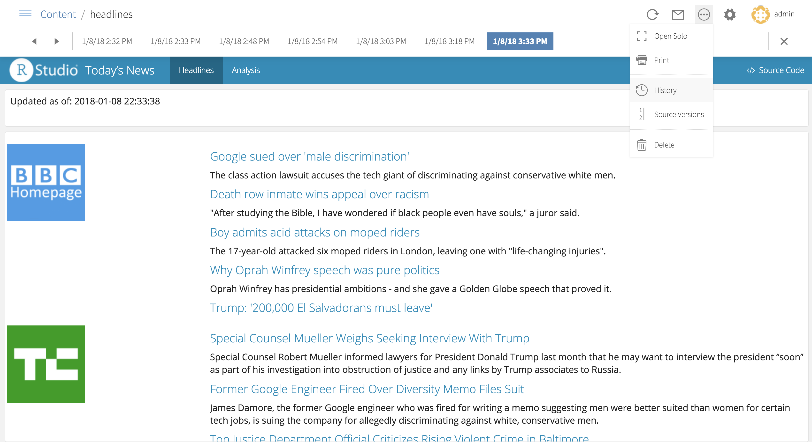

2018-01-12
We’re pleased to announce RStudio Connect 1.5.12. This release includes support for viewing historical content, per-application timeout settings, and important improvements and bug fixes.

RStudio Connect now retains and displays historical content. By selecting the content’s history, viewers can easily navigate, compare, and email prior versions of content. Historical content is especially valuable for scheduled reports. Previously published documents, plots, and custom versions of parameterized reports are also saved. Administrators can control how much history is saved by specifying a maximum age and/or a maximum number of historical versions.
Timeout settings can be customized for specific Shiny applications or Plumber APIs. These settings allow publishers to optimize timeouts for specific content. For example, a live-updating dashboard might be kept open without expecting user input, while a resource-intensive, interactive app might be more aggressively shut down when idle. Idle Timeout, Initial Timeout, Connection Timeout, and Read Timeout can all be customized.
Along with this improvement, be aware of a BREAKING CHANGE. The Applications.ConnectionTimeout and Application.ReadTimeout settings, which specify server default timeouts for all content, have been deprecated in favor of Scheduler.ConnectionTimeout and Scheduler.ReadTimeout.
RequireExternalUsernames option deprecated in 1.5.10 has been removed.You can see the full release notes for RStudio Connect 1.5.12 here.
Upgrade Planning
There are no special precautions to be aware of when upgrading from v1.5.10 apart from the breaking changes and known issue listed above and in the release notes. You can expect the installation and startup of v1.5.12 to be complete in under a minute.
If you’re upgrading from a release older than v1.5.10, be sure to consider the “Upgrade Planning” notes from the intervening releases, as well.
If you haven’t yet had a chance to download and try RStudio Connect, we encourage you to do so. RStudio Connect is the best way to share all the work that you do in R (Shiny apps, R Markdown documents, plots, dashboards, Plumber APIs, etc.) with collaborators, colleagues, or customers.
You can find more details or download a 45-day evaluation of the product at https://www.rstudio.com/products/connect/. Additional resources can be found below.